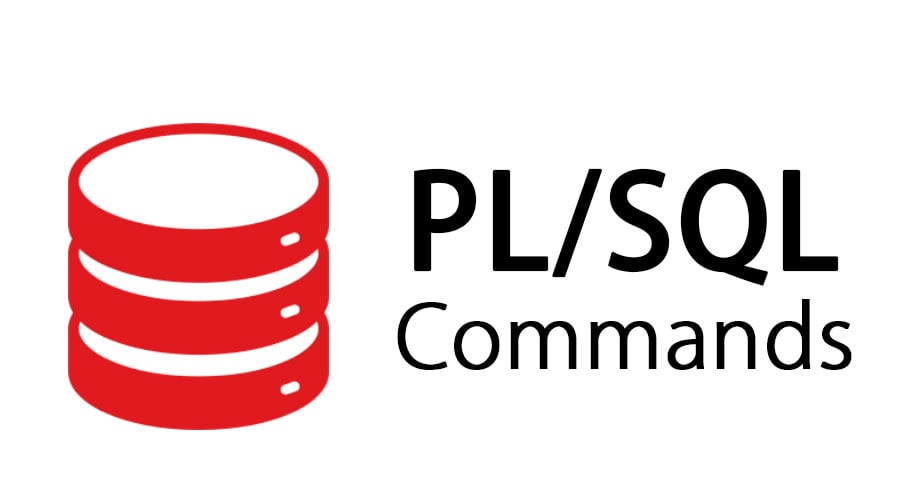
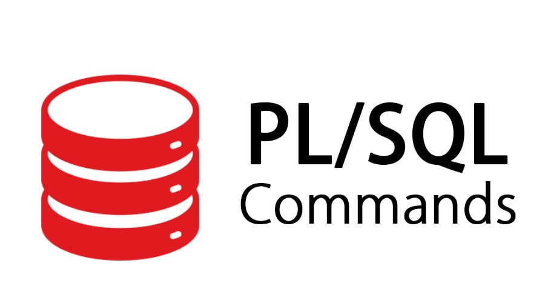

Conocimientos
- C++, PL/SQL Y POWER BI
-
 


Data Scientist | Oracle SQL | Power BI | C++ | Estudiante de Sistemas Informáticos UTN
Actualmente como data scientist en la gestión de Big Data mediante SQL , destacando en la extracción de datos valiosos para análisis estadísticos y la toma de decisiones. Nuestro trabajo con Power BI facilita la visualización y comprensión de grandes volúmenes de información, proporcionando insights clave a la organización. Como estudiante de Sistemas Informáticos en la Universidad Tecnológica Nacional, me mantengo a la vanguardia de las tendencias tecnológicas, complementando mis habilidades en el campo con una educación sólida y actual. La fluidez en inglés B2 enriquece mi capacidad para colaborar en entornos internacionales, fortaleciendo la comunicación y el alcance global de nuestros proyectos.
Github: Tomas Tallarico
Mail: tomyb-t@outlook.com
LinkedIn: Tomas Tallarico